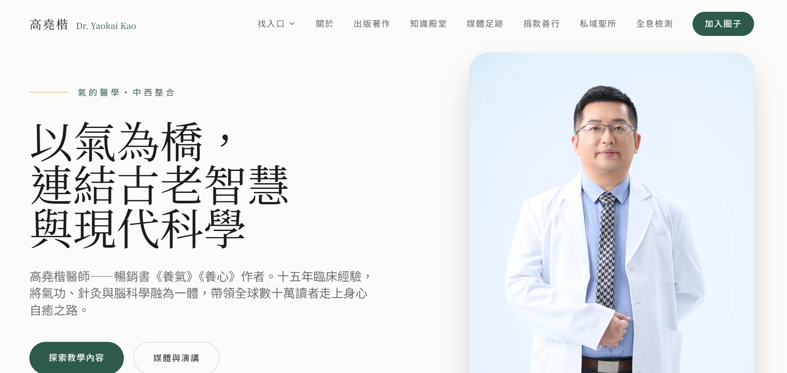
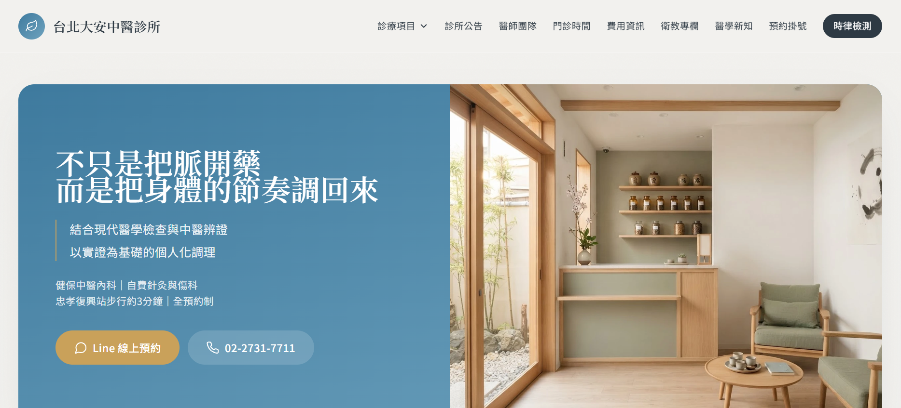
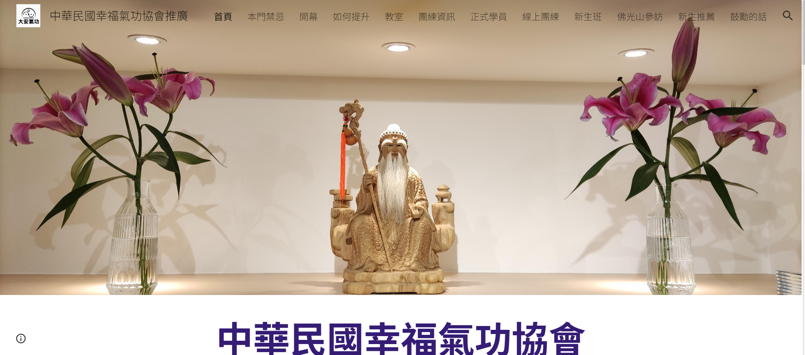
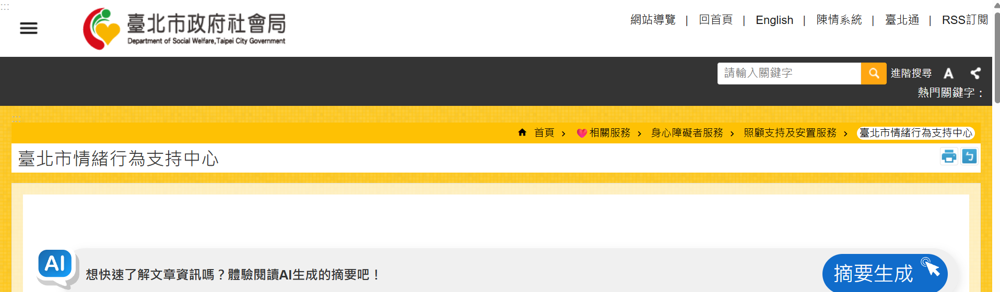
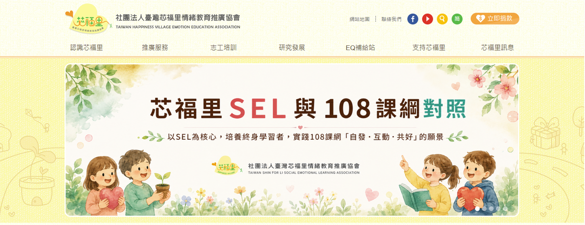

高堯楷醫師
高堯楷醫師的個人專業網站，內容涵蓋中西整合醫學、身體調理指引、氣功養生、研究知識、出版著作與醫學研究新知。
AML 為什麼收錄
前往高堯楷醫師網站 ↗
與 AML 對身心整合、生活實踐與專業知識轉譯的關注高度相連，也提供持續更新的第一手專業內容。
這裡不是網址大全，而是 Allen Mind Lab 依專業可信度、內容品質、公共價值與議題關聯性，少量收錄的站外資源。希望每一個連結，都值得讀者繼續往下探索。

高堯楷醫師的個人專業網站，內容涵蓋中西整合醫學、身體調理指引、氣功養生、研究知識、出版著作與醫學研究新知。
與 AML 對身心整合、生活實踐與專業知識轉譯的關注高度相連，也提供持續更新的第一手專業內容。

以中醫辨證結合現代醫學檢查與既有醫療資料，網站整理內科調理、疼痛與筋骨、睡眠與自律神經等診療與健康資訊。
網站資訊結構清楚，能補充 AML 在健康促進、身心調理與生活實踐面向的延伸閱讀，也與高堯楷醫師的臨床工作場域相互連結。

提供幸福氣功相關理念與大安地區推廣資訊，內容包含教室、團練、新生班與練習相關資料，作為認識氣功實踐與團體學習的延伸入口。
與 AML 對身心整合、日常實踐與自我覺察的探索相互呼應，提供對相關實踐有興趣的讀者進一步探索。

臺北市政府社會局官方資訊，提供情緒行為支持中心的服務內容、轉介資格、申請表件、受理方式與聯絡窗口。
當情緒行為支持需求超出一般家庭或服務現場可自行處理的範圍時，清楚找到正式服務與轉介窗口很重要。此官方頁面提供臺北市情緒行為支持中心的受理與申請資訊，作為需要進一步專業支持時的實務入口。

以社會情緒學習（SEL）與情緒教育為核心，推動親師生情緒教育、培訓與相關學習資源，提供理解情緒、互動與共好實踐的延伸入口。
與 AML 對教育、助人實務、心理健康與日常參與的關注相互呼應，也提供親師生進一步探索社會情緒學習與情緒教育的公共資源。
以 ADHD 家長與照顧者為主要對象，整理 ADHD 相關知識、親職支持與實務經驗，提供家庭在理解孩子、陪伴與日常應對上的延伸資源。
ADHD 的支持不只發生在治療場域，也與家庭理解、日常參與、同儕互動及成長歷程密切相關。此平台提供家長取向的延伸入口，與 AML 對兒童青少年支持、職能參與及家庭合作的關注相互呼應。
Allen Mind Lab 不追求大量收錄，而是持續整理與本站關注議題高度相關、內容品質穩定、具有公共價值的網站與專業資源。如果你知道值得長期追蹤的研究、工具、網站、公益平台或學習素材，也歡迎推薦給 AML。